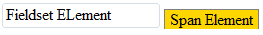
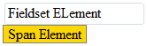

FIELDSET 元素用来将表单 (FORM) 内的相关元素(控件)分组，一般结合 LEGEND 使用。
FIELDSET 元素是 block-level 元素，它的 CSS 属性 'display' 为 'block'。
参考：
在 IE6 IE7 IE8(Q) 中，当给 FIELDSET 元素设置了一个固定的宽度时，该元素的表现更像是一个行内元素，虽然它的 'display' 值仍是 'block'。
这个问题会造成局部的布局混乱。
| IE6 IE7 IE8(Q) |
|---|
根据 HTML 4.01 和 CSS 2.1 中相应规范说明 FIELDSET 元素是个块级元素，现实中各个浏览器均是如此表现的么？分析以下代码：
<fieldset style="width:150px;"> FIELDSET ELement </fieldset> <span style="border:1px solid gray;padding:0 5px;background:gold;"> Span Element </span>
FIELDSET 元素设置了 'width:150px'，其后是个行内元素 SPAN。 FIELDSET 是块级元素，没有设置浮动或绝对定位处在普通文档流中，SPAN 元素应该是另起一行显示。
但事实不是这样：
| IE6 IE7 IE8(Q) | IE8(S) Firefox Safari Chrome |
|---|---|
|  |  |
结果是：
IE8(S) Firefox Safari Chrome：FIELDSET 是块级元素，处于普通文档流中，单独占据一行显示。SPAN 元素另起一行显示。按照规范这样渲染正常的。
IE6 IE7 IE8(Q)：FIELDSET 元素和 SPAN 元素在同一行显示，这时 FIELDSET 元素表现更像是 'inline-block' 元素。
检查 MSDN 说明，其内同样表明 FIELDSET 元素是块级元素，由此可以证明，以上现象是 IE6 IE7 IE8(Q) 浏览器的 Bug ，直至 IE8(S) 才将此问题修复。
这是一个 Bug，通过显式设置 FIELDSET 的样式为 'display:block' 来修复。
| 操作系统版本: | Windows 7 Ultimate build 7600 |
|---|---|
| 浏览器版本: |
IE6 IE7 IE8 Firefox 3.6.2 Chrome 5.0.356.2 dev Safari 4.0.5 Opera 10.51 |
| 测试页面: | fieldset_element.html |
| 本文更新时间: | 2010-08-03 |
FIELDSET width display block inline-block 折行